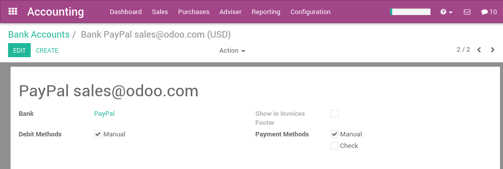

With Odoo, you can synchronize your PayPal account. That way, you don't have to record all your PayPal transaction in your favorite accounting software. The synchronization is done every 4 hours, and you can start reconciling PayPal payments in just a click.
Configuration
Install the account_yodlee module
Start by installing the account_yodlee module, if it is not already installed. To do that, got the the menu of the accounting application. In the section Bank & Cash, set the option Bank Interface - Sync your bank feeds automatically.

Click on the apply button once it's done.
Setup your PayPal account
A PayPal account in Odoo is managed like a bank account. To setup your PayPal account, use the menu . Create a new bank account and name it PayPal. In the bank field, you can set PayPal.
Once the PayPal account is created, go back to the Accounting dashboard and click on the Synchronize button. In the dialog, choose PayPal as the online institution and click on the configure button.

Then, you will have to provide your credentials to connect to PayPal. Once everything is done, you should see your PayPal transactions right in Odoo and you can start reconciling your payments.
Enjoy a full integration! You don't need to record transaction manually anymore.
Note
You only have to provide your credentials the first time. Once done, Odoo will synchronize with PayPal every 4 hours automatically.